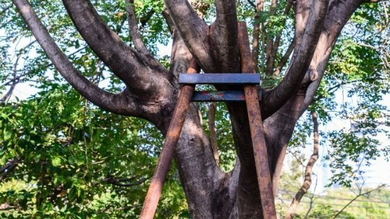

Call Us To Get Your Free Quote !
Call Now : 208-417-7993
Tree Cabling And Bracing Pocatello Idaho
At Pocatello Tree Service, we offer professional tree cabling and bracing services in the Pocatello and Chubbuck areas. Cabling and bracing are structural support systems used to reduce the risk of structural failure in mature trees with co-dominant stems, heavy canopies, or weak crotches. By installing high-strength steel cables and threaded rods, we help stabilize compromised trees, extending their lifespan and keeping your property safe.
Our certified techniques provide peace of mind, especially during the high winds and heavy snow seasons that Bannock County experiences. We utilize dynamic and static cabling systems tailored to the tree's species, growth pattern, and structural needs, allowing natural movement while preventing catastrophic splits.
If you have a valuable tree that shows signs of splitting or has large, heavy limbs extending over your home, contact the local experts at Pocatello Tree Service today for a professional evaluation.
Call us Today : 208-417-7993What Is Tree Bracing?
Tree cabling and bracing is the technique employed to maintain or reinforce the structure of trees. You know, trees especially the large ones will be marred with undesirable branching, splits, cracks, decays, and weak rooting system resulting in structural failure.
Sometimes, the said structural failure may be obvious sometimes it’s not. A few other factors that add to said structural failure is improper trimming or pruning. That’s why you always have to get the help of pros to get the job done. Don’t worry, we offer not only tree cabling and bracing in Pocatello but also tree trimming and removal services.
Bracing a tree or cabling is not as simple as it sounds. We need to follow certain techniques and do a deep analysis so we can effectively support a tree especially if it’s a large one. We also need to pay special consideration to it if it’s in a residential or commercial area. And, if you should know, we do offer 2/4 emergency tree related services all over the Pocatello, Idaho area.
That’s why it’s very important to whether trim the tree, brace or cable it, or just remove it entirely. Weak areas on a tree and large limbs or trunk may cause it to fall and we want to prevent that as much as possible to prevent any injury or property damage.
So, what do tree cabling and bracing do?
In a nutshell, this weak area of a tree’s structure is where we place different types of tree cables and bracing rods for additional support. Once the cables and braces are properly placed in between said limbs a load of weight can then be redistributed that will then allow both the trunk and limbs to support one another.
Bracing rods are oftentimes utilized to bolt splitting limbs together. But also, part of this process is knowing that not all cabling and bracing for these trees will not hold on for an indefinite amount of time if the tree itself is already in bad shape. A tree regardless of its size may fall if it’s already beyond help. This is when we as experts need to decide with you if the tree is better off getting remove for the safety of everyone.
Is Tree Cabling A Good Idea And Does It Hurt The Tree?
Tree cabling and bracing are great ideas if you think the tree needs them. When in concern, call us! Whether you are investigating a tree in a residential or commercial area, please contact us before it’s too late.
If you see obvious physical signs of deterioration in the tree we need to check that out so we know whether it needs to be removed, trimmed, cabled, or braced. Our crew will perform an analysis, layout the plans, and then execute it all at once fast and easy. We offer all of these services at the most affordable rate in the Pocatello, Idaho area.
Tree cabling is a preventative measure and at the same time can be a temporary measure if we can’t work on removing the tree altogether at the moment. As we work, we need to make sure that there wouldn’t be any property that may be damaged. That can be tricky and challenging but we are more than up to the task. Our team has decades of experience in this field among them.
Also, cabling and bracing trees regardless of their size are recommended if severe weather conditions are coming in your area. Strong winds, snow, storm, and a hurricane is bad news for trees and we don’t want those branches or stems flying nor trees falling due to failing structural integrity. We want to be prepared before we suffer loss in property or injury.
Tree cabling and bracing when done right just like when you’re trimming and pruning them will not hurt a tree. On the contrary, it will help the tree and make it healthier in the process. That’s why you always need to call in the pros the do the job.
Call Now : 208-417-7993Tree Cabling And Bracing Techniques
- We employ multiple tree cabling and bracing techniques and of course, utilize what’s best for the situation. There’s what we call the single, parallel, alternate, and crossing bracing system types.
- As mentioned above, brace rods are used to prevent branches from further splitting apart. They are utilized if there is more than one leader in the tree as that may pose a lot of problems for it causing it to go sideways and eventually falling.
- On the other hand, cabling will restrict the distance that a certain branch can move considering the overall structure of the tree. There are also a few cabling systems that we employ. These are direct, triangular, hub and spoke, and box cabling systems.
- The direct cabling system is used to link 2 parts of a tree, triangular will connect 3 parts, hub and spoke for center attachments, and box cabling is used to link more than 3 parts of the tree.
- It may get a bit complicated so leave it all to your professional arborists and landscapers to do the job. Call us, get your free estimate anytime!